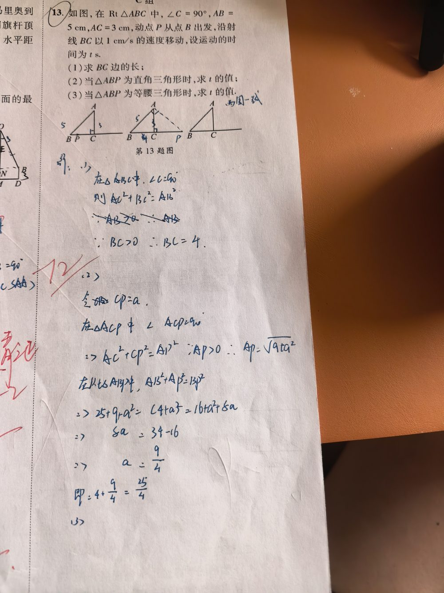

① Rt△ABC，∠C = 90°；② AB = 5 cm，AC = 3 cm；③ 动点 P 从 B 出发沿【射线 BC】（会越过点 C 继续向右）以 1 cm/s 移动；④ 运动时间 t s ⇒ BP = t cm。
（1）BC 的长；（2）△ABP 为直角三角形时的 t；（3）△ABP 为等腰三角形时的 t。
【（1）】由勾股定理：BC = √(AB² − AC²) = √(25 − 9) = 4 cm。 【（2）按直角顶点分类】： ① 若 ∠APB = 90°：即 AP ⊥ BC。A 到直线 BC 的垂足恰是 C，故 P 与 C 重合 ⇒ BP = BC = 4 ⇒ t = 4； ② 若 ∠BAP = 90°：设 BP = t（t > 4），则 CP = t − 4，AP² = AC² + CP² = 9 + (t − 4)²； 由 AP² + AB² = BP²：9 + (t − 4)² + 25 = t² ⇒ t² − 8t + 50 = t² ⇒ 8t = 50 ⇒ t = 25/4； ③ ∠ABP = 90° 不可能（P 在 BC 上，∠ABP = ∠ABC < 90°）。 ⇒ t = 4 或 25/4。 【（3）按相等的边分类】： ① AB = BP：t = 5； ② AB = AP：9 + (t − 4)² = 25 ⇒ (t − 4)² = 16 ⇒ t = 8 或 t = 0（t = 0 时 P 与 B 重合，三角形退化，舍去）⇒ t = 8； ③ AP = BP：P 在 AB 的垂直平分线上 ⇒ 9 + (t − 4)² = t² ⇒ −8t + 25 = 0 ⇒ t = 25/8。 ⇒ t = 5、8 或 25/8。
① 忽略「射线 BC」：P 可以越过点 C（t > 4），只考虑线段 BC 会漏解； ② 分类不全：直角三角形要分三种直角顶点、等腰三角形要分三组相等的边，最容易漏「以 P 为直角顶点」「AB = AP」； ③ 算 AP 时忘记 P 越过后 CP = t − 4（不是 4 − t）； ④ 解出 t = 0 不舍去（三角形退化）； ⑤ 把 AP = BP 误当成 P 是 BC 中点（那会得 t = 2，是错的；正确 t = 25/8）。
① 勾股定理及其在动点问题中的应用； ② 直角三角形的分类讨论（按直角顶点分三种）； ③ 等腰三角形的分类讨论（按腰分三种）； ④ 垂直平分线的性质（到两端点距离相等）； ⑤ 动点问题「时间 t ⇒ 线段长」的转化，以及舍去不合题意的解。 📌 出处：若琳此题只写了开头（“在△ABC中，∠C=90°则 AC²+BC²=AB²”），未完成。